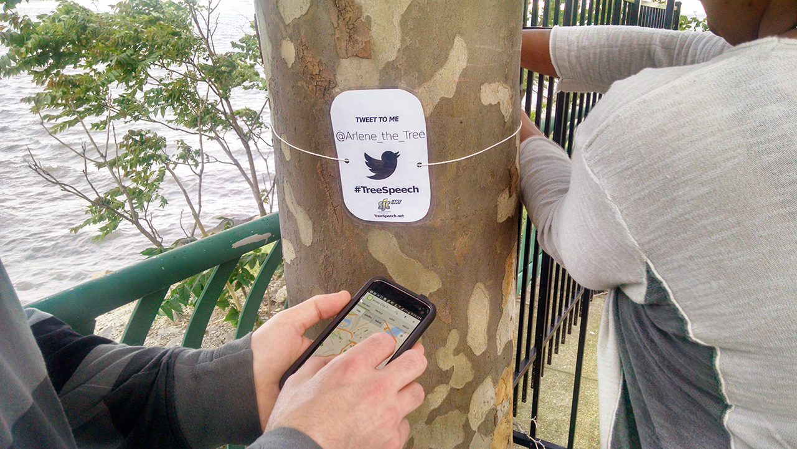

How to Sign Up:
If you have any questions, feel free to email us.
- Choose a tree. It should be near your home or work, or along your daily route.
- Choose a name for your tree. Create a twitter account in this format: @(Name)TheTree. You can now start tweeting! Use #TreeSpeech in every tweet.
- Create a login on Open Tree Map and email to tell us what your username is. We'll give you editing access so you can map your tree!
- Suggested donation is $15 per tree, to cover project costs. This is not required to participate, but it is appreciated!
